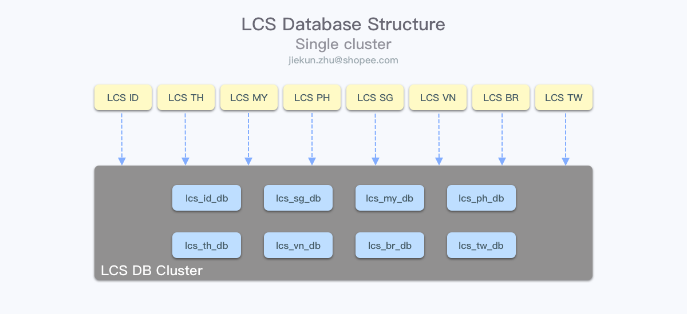
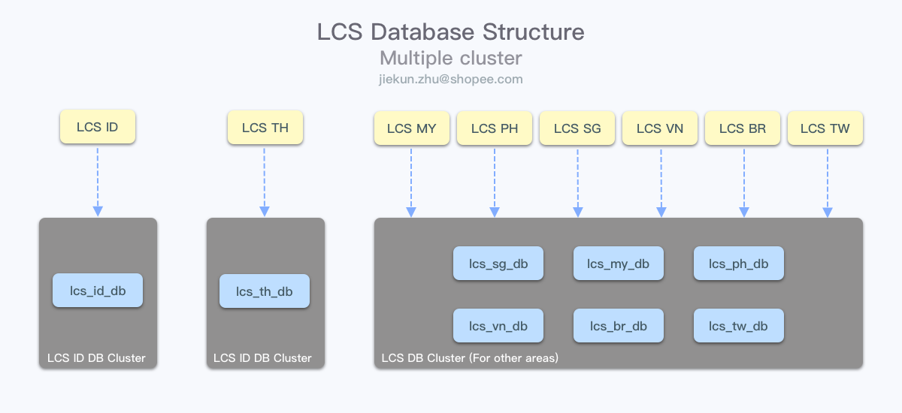
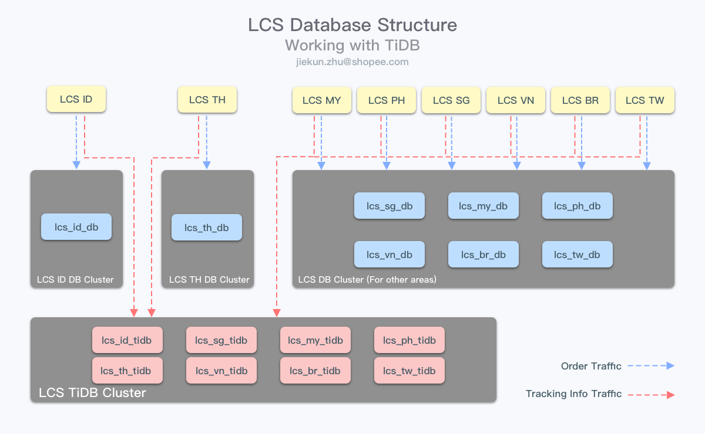
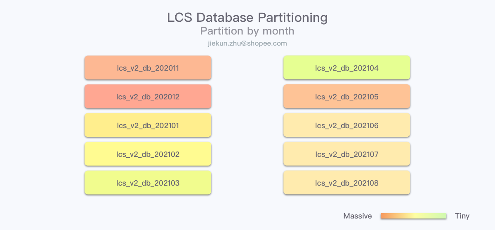
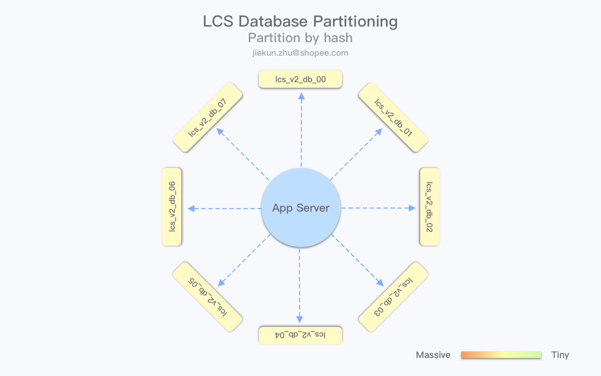
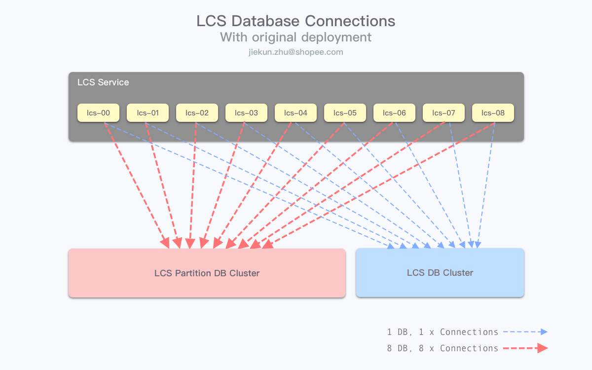
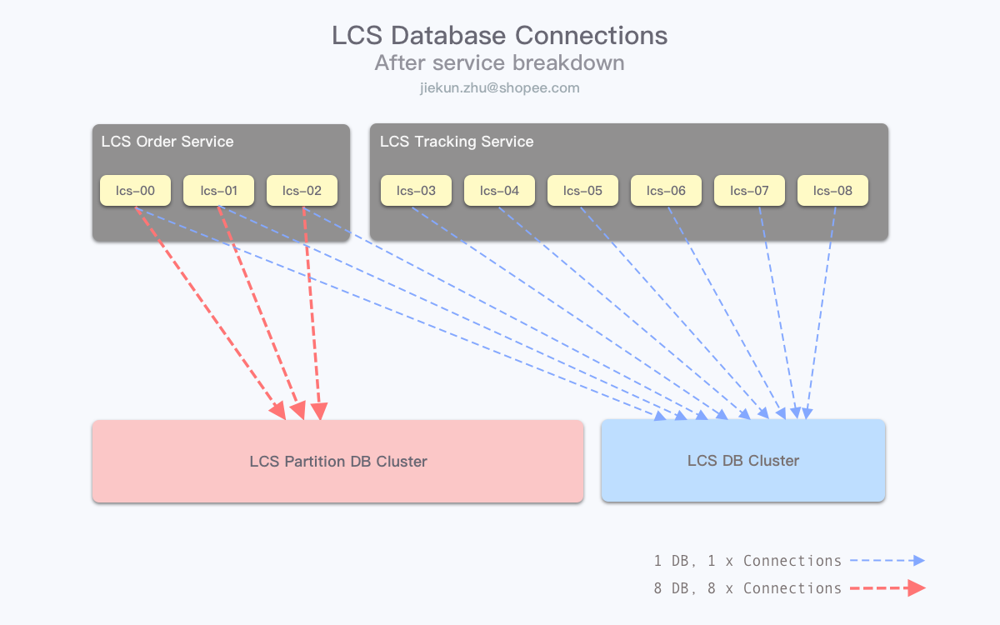
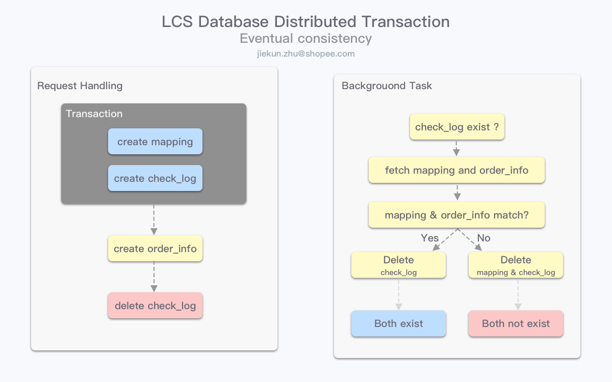
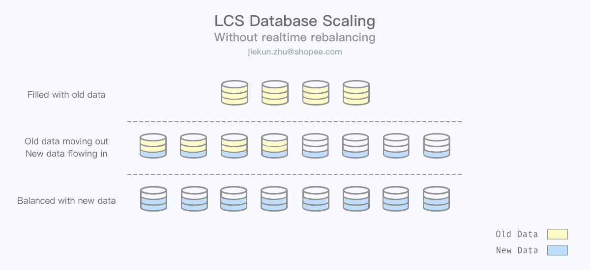

业务核心数据库架构演变——权衡取舍的艺术
Shopee供应链 Logistics Channel Service 项目（下称LCS）是物流履约链路上的最后一环，连接Shopee物流订单与第三方物流服务（3rd Party Logistics，下称 3PL ），几乎所有与 3PL 的交互都会收拢到LCS服务中。
从 2019 年 9 月至今，随着上游系统拆分迁移，越来越多 3PL 进入 LCS 负责范围；并且由于电商业务在 2020 年的飞速发展，系统每月的订单量也在陡增，对数据库的要求和压力随之而来，在短短 1 年内，数据库架构跟随业务增长进行了多次调整。
本文简要回顾了 LCS 诞生至今的数据库架构变化，并介绍项目组在 2020 年末落地的分库实践，梳理落地过程中踩过的坑和总结的经验、教训和思考。
新方案实践的过程中，有遇到常规库表拆分中共有的问题，也有针对项目场景的“特色”问题，解决问题更多是权衡取舍的过程，在没有完美解决方案的情况下，需要结合业务特性来分析和选择最有利的方式处理。
Introduction
项目起源
LCS 是一个基于 Python Django 框架的项目，业务核心是物流订单的履约过程，包括连接上游和第三方物流服务的创建订单、轨迹与运费更新。在部署上，LCS 依据业务所在的市场（印尼、马来西亚、新加坡等）不同，应用层分市场部署，并使用各自市场对应的数据库。在项目起步初期，这些不同市场的数据库共用同一套物理集群，共享内存和磁盘空间，在资源上看，是足以应付初期流量的。

随着业务的铺开，共用集群的问题慢慢体现了出来。地区与地区之间存在业务差异，订单数量、订单轨迹比例不同，依赖物理集群自身的资源调度不能满足我们的需要，很多时候：
- 订单量大的地区的数据库读写影响了订单量少的地区的 I/O 资源
- 轨迹推送 RPS 远比下单高，大量的轨迹信息读写影响了核心的下单流程
在尽量不影响业务的情况下，我们先选择了将热点地区的数据库拆分到单独的物理集群上，独占资源，保证自身服务稳定的同时，也减少了对其他地区服务的影响。在这个过程中，由于不同市场使用的是不同的逻辑库，所以切换没有任何的业务改动，在 DBA 的协助下，可以非常迅速地完成这个操作。

面对轨迹推送更高 RPS 的问题，我们使用了临时表和消息队列进行削峰，让解析轨迹并绑定到对应订单上的过程延迟发生，整个处理操作更加平滑。问题在于临时表是设计在业务 MySQL 库中的，业务上，轨迹更新可以缓冲，但是 MySQL 受到的压力并没有减少。
因此，在前面的物理集群拆分后，我们又启用了 TiDB 存放临时轨迹数据，尽量降低对 MySQL 的 INSERT 和 DELETE 操作数量，这样做的好处在于能减少由于写操作带来的频繁页分裂与合并，有利于查询性能，以及写操作引起的主从延迟。

面临挑战
尽管已经做了两次拆分和调整，但是随着订单量的持续上涨，又由于物流订单中的信息繁杂，尤其上游早期未加以限制的各种收发货地址、名称、联系方式，以及跨国运输业务所需要的详细的商品细节，再加上物流轨迹的描述信息，让每个订单的文本类型数据非常多，数据库表的体积容易暴涨。
根据 2020 年下半年的数据统计，印尼地区的 MySQL 集群磁盘使用量在短短数个月内已经突破 30%，并且随着上游流量灰度至本服务的比例上涨，每个月的增量都比以往更大。在灰度结束后，又迎来了下半年几个重要的促销活动时间节点——双9、双11、双12，数据体积进一步增长，仅通过日常的数据清理与数据库压缩已经没有办法维持集群磁盘空间的未来使用了。
Evolution
DBA 团队在历次集群调整的过程中，都一再强调了数据增速过快，磁盘空间规划和使用的问题。而业务产品团队也提出运营数据相关的需求，历史物流订单的数据在未来没有办法直接删除，而需要归档用于统计分析。这也推动了业务研发团队要尽快输出方案，应对更大的单量和不同的产品需求。
设计目标
在当前设计下，每个地区使用单个数据库，由于单库的数据体积暴涨，因此将各地区的数据库进行分库势在必行。我们期望新的架构可以：
- 承载未来较长一段时间的数据存储需求。因为硬件资源有限，很多时候变动并不容易实施，而且重新调整架构也是让 DBA 和业务研发人员非常痛苦的一件事情；
- 同样稳定可靠。对核心业务链路上的项目而言，稳定性是最重要的；
- 保留合理的可扩展性。重新调整架构很难，但不代表当前架构下不能做业务无感知的横向扩展；
- 便于进行数据归档。来自产品团队的需求，数据也是支撑未来业务设计的核心因素。
方案设计
分库模型
在最初的设计中，我们期望新的分库模型能够很容易完成数据归档的操作，例如可以从一个较粗的粒度将历史数据转移到归档机器上。因此第一个诞生的想法是设计按月份拆分的数据库。当前的单库设计——所有的数据都落在不同的哈希分表中，要将历史数据捞出来进行转移是非常麻烦的：
- DBA 团队不会访问和维护数据库中的数据，因此业务侧要自己完成归档操作；
- 访问和迁移指定时间范围的数据，意味着所有哈希分表的 B+ 树需要发生大量的页合并操作，不利于线上业务的性能。
因此，按月分库的想法初衷是想把可以进行归档的数据集中在一起，不管是业务侧想办法迁移，还是 DBA 能够提供数据库维度的操作，都能简化一定的操作成本。

然而，没有十全十美的方案，如果想要按月份拆分，当月内的数据就会落到同一个数据库中，在未来不可避免会存在各个库的数据量不均匀，热点数据集中等问题。并且随着单月数据量的增大，未来再来处理单库体积，例如将单月的数据再做哈希分库，数据库的结构就变得更为复杂了。
所以，第二个较为容易实施的划分方案自然是一开始就直接按照哈希分库，让数据均匀地落到不同的分库中去。但这样又有和单库做数据归档一样的问题——库表均按哈希划分，数据均匀分布，没有较粗的粒度可以定位出历史数据，需要依赖应用层一点一点做迁移。

这时，我们需要考虑在两种方案之间做一定的权衡，选取更适合当前和未来业务的方案：
- 支撑未来业务：两种方案都降低了单库的数据量，但是按时间分库会在业务进一步增长后，单库体积继续难以管控；哈希分库会更加均匀；
- 稳定性：从部署和使用上，两种方案的稳定性影响因素都比较类似。但是以时间分库可能需要 DBA 团队的手动维护，包括如何持续未来各个月份的数据库等。我们会更倾向于使用人工操作次数少的方案，哈希分库在搭建完成、交付后更可靠；
- 可扩展性：按时间分库比较难继续做拆分，例如在未来改成时间+哈希的方案，但是会显著增加复杂度；哈希分库可以考虑直接增加“
% base”的数值，业务调整更小、更容易落地； - 数据归档：哈希分库不好处理归档数据，归档操作粒度太细，有应用层的操作开销，引入大量的数据行
DELETE操作，并且不加以控制资源使用量会影响线上业务；按时间分库如果有DBA支持，可以更方便地完成数据归档，操作难度大幅降低。
结合各方面的考量，我们最终选择了哈希分库的方案，通过牺牲数据归档操作的便捷性，期望能让业务应用在未来相对更稳定可靠。
应用部署架构拆分
在确认分库的模型后，我们又遇到了另一个问题：受限于资源，想要给每个地区市场搭建多套物理集群，让每个哈希的分库都能独享机器，目前机房的剩余数量已经没办法支持。按照单个 MySQL 集群 1 主多从的搭配，n 个地区市场、每个市场 m 个哈希分库，一共需要 (1 master + s slave) × n × m 台物理机，成本是非常高昂的。所以 DBA 团队能够交付到给业务团队的集群数只有 n 套，也就是 n 个地区市场均为独立集群，该市场上的 m 个哈希分库共用一套集群。
由于 Python 应用的特点，各个 Pyhton 进程都持有各自的连接池，因此，业务侧持有的数据库连接数为：
- 单进程连接数 * 进程数 * 机器数。
而由于机器资源的问题，不同的 m 个哈希分库又落在了同一套物理集群上，对主库的机器而言，连接数上限变成了：
- 单进程连接数 * 进程数 * 机器数 * 数据库数。

依照当前的业务量进行计算，维持现有架构直连新分库集群将会超过机器设置的连接数上限，而且本身大量的连接数对服务而言也是非常不利的。因此业务侧需要想办法降低连接数峰值，否则新的数据库集群将无法使用。
改造可以从计算的公式入手，降低 4 个参数中的任意一个都能提供我们想要的效果。其中：
- 数据库数是依据业务数据，从保证未来单库数据体积不超过一定值计算得出的，因此不能再继续调低；
- 进程数和连接池连接数的配置是依照业务请求量调整的，降低的话会让单机的请求处理能力下降。
所以我们尝试在机器数量上做改变。由于处理下单和处理轨迹推送更新的服务没有分离，且轨迹流量是订单流量的数倍，因此该服务使用了较多的机器数量同时支撑下单与轨迹更新。但是轨迹流量是暂存 TiDB 而不访问 MySQL 的，如果可以服务分开部署，老服务只负责下单访问 MySQL，新服务轨迹更新只访问 TiDB，那么需要访问 MySQL 的机器数量就可以大幅降低。以印尼地区为例，轨迹请求数量为下单请求的 9 倍，参考这个比例，并考虑一定冗余机器数保护核心的下单业务流程，我们在 Nginx 代理层将不同类型的接口划分至了不同服务。
拆分后，处理下单等服务的机器数量降低到原来的 25%，相应地，在连接数计算结果上，数值也缩小至 1/4。

当然，造成连接数过高的原因有很多，解决方案也有很多，例如用 Golang 将项目重构（减少服务进程数）、在应用层和数据库集群之间再搭建一套服务用来统一管理连接、使用分库的中间件等。目前对 LCS 项目而言，重构的开销会比较大，其他的方案也需要单独设计和推动，应用架构拆分可能是较为可靠且最容易落地的方案之一。
业务改造
确认数据库架构方案之后，应用层需要进行调整的内容主要包括：
- 分库依据规则；
- 应用数据路由；
- 跨库操作补偿。
分库依据与路由规则
为了避免数据迁移，让新数据库架构能够平滑、可灰度地上线，我们圈定了部分表作为划分进分库的范围，这部分表的新增数据将会在新分库集群上进行读写，而老数据会在原数据库读写。
业务团队梳理了对应范围表的读写模型，因为都依照其中的订单 ID 进行读写，毫无疑问订单 ID 可以作为分库的依据。因为数据库路由由应用层管理，只需要对订单 ID 稍加改造，加入一些标志信息，让应用层能区分开：
- 订单 ID 应该在原数据库还是新的哈希分库；
- 订单 ID 应该落在第几个哈希分库。
调整框架内的数据库路由规则比较繁杂，包括将每类表的管理类重写，因为涉及的表比较多，所以也改动了大量的代码，这部分不一一赘述。
跨库一致性补偿
由于只圈定了部分表到分库中，那么这部分表与原数据库表的交互就丢失了事务可行性，也就是没办法依赖数据库的事务保证它们一致了。 MySQL 提供了 XA 跨库事务操作，但是在实际使用中，使用 XA 跨库事务有很大的性能开销，并且也需要开发者有对应的知识储备来正确操作。
因此，最终应用层的方案是增加一套检查机制，使得不同库表的操作如果发生异常，也能在异步的检查任务执行完成后，恢复（回退/清理）到一致的状态。
以下单流程为例，我们有以下表落在了不同数据库，但需要严格保持一致：
- 订单表：在分库中，存有订单 ID 和订单对应 3PL 物流单号信息（通过订单单号获取订单信息，包括 3PL 物流单号）；
- 反查表：在旧库中，存有 3PL 物流单号信息和对应订单单号信息（通过 3PL 物流单号查订单单号）。
由于分库依据是订单 ID ，所以反查表的查询模式（按 3PL 物流单号查询）让它没有办法放在分库中，只有带订单 ID 的查询才能在分库集群上正确被路由，否则需要遍历所有分库获取数据。
为了保持反查表和订单表数据的一致，我们在旧库中新增了一个检查表（Checker），这样 Checker 与反查表能使用事务特性，保证如果反查表需要发生变更，会有对应的 Checker 被记录下来。
反查表操作结束后，应用层继续操作订单表，如果操作失败，此时反查表和订单表就会出现数据不一致的情况。应用层有定期执行的异步任务，通过检查 Checker 信息，对比当前订单表和反查表是否一致，如果不一致，则通过修改反查表记录让它们回到一致的状态。

以上图为例，mapping 与 order_info 数据在不同数据库中，通过单库事务保证 mapping 数据与 check_log 数据同时存在，若后续 order_info 数据执行异常，后台任务延迟获取到 check_log 后，对比 mapping 与 order_info 数据，选择是否要对 mapping 进行清理。
Checker 扮演的角色相当于 InnoDB 中的 undo log，如果事务执行失败，参照其中的内容进行回退或类似的操作，保证最终一致性。
应用层实现数据一致性补偿，是最初提出几个不同方案的其中之一，缺点是一致性需要在后台任务执行后才能保证，异常情况下涉及的表会出现短暂不一致的情况。若在各个分库中都设置对应的反查表，同样可以继续保留数据库事务的可行性，但是因为查询条件不同，需要额外遍历所有分库进行查询的开销。以上思路，包括不使用 XA 事务，都是出于不同业务场景、实践成本下的权衡取舍结果。
发布维护
灰度发布
应用架构、数据库架构的调整，在项目上都引入了非常多的新内容，因此灰度发布需要检查的内容也非常多。
应用架构将部分流量划分到了新部署的服务中去，在上线需要谨慎验证新服务的各种中间件连通性，流量处理结果是否与原服务一致，并且轨迹信息数据的发起端在第三方，任何的请求丢失都可能影响到重量和运费计算等核心指标。因为路由划分依赖 Nginx，在发布时我们提前部署好应用层的服务，并让 Devops 团队协助，在 Nginx 节点上按比例让新路由配置逐步生效进行灰度。
数据库架构的调整后，SQL 查询落入新分库集群或是老集群应用层的订单 ID 控制，因此灰度也由应用层实施。在代码全部发布完后，应用层通过配置开关管理订单 ID 规则，在满足特定条件（如特定机器 IP、比例和时间等）时才产生新分库规则的订单 ID，其余订单仍保持使用旧订单 ID。观察灰度订单的完整履约结果，确认无误后再慢慢扩大灰度比例。
数据归档
前面提到过，这套设计方案下，数据按照时间进行归档会比较困难，需要操作表中的具体数据。归档过程中大量 UPDATE 和 DELETE 产生的磁盘 I/O 会对业务性能表现产生影响。
当前业务中只需保留最近6个月的数据，因此我们需要将创建时间在 6 个月前的订单筛选出来、写入至归档库、删除业务库数据。研发团队在设计后台归档任务的时候尽可能避免集中迁移，理论上只要迁移速度等同于下单写入的QPS即可维持平衡，因此将任务设计成每分钟执行，对数据库的压力能控制在可接受范围内。
无迁移扩容
通常在数据库扩容时，我们需要将原有数据进行迁移，让其平均分布在各个新数据库中。但有了归档基础后，我们可以发现在预留充足时间的情况下，数据库的逻辑扩容无需进行数据迁移。
以数据库数量从 16 个扩至 64 个为例，通过修改订单 ID 规则，让新订单根据 % 64求路由，老订单继续使用 % 16，那么每个数据库的数据增长速度为总订单量增速的 1/64，是原来 1/16 的 25%。在增速减缓，归档迁出速度不变的情况下，原有的 16 个数据库中数据量会逐步从总订单量的 1/16 降低至 1/64，而新增的 48 个数据库数据量也会从 0 增长至 1/64。

通过这种无数据迁移（Rebalance）的扩容，可以避免实施双写方案的复杂性和不确定性，且手动操作和人工检查双写正确性的环节更少；代价则是无法在扩容后马上降低原有数据库的压力，因为仍有大量老订单读写落在老数据库中，压力需要随时间缓慢降低。在监控机制完善且业务增长有一定规律的情况下，我们可以综合这些因素，预留足够多的时间进行扩容、接受缓慢的数据重平衡。
Conclusion
除非有完美的解决方案，每一次的架构调整背后都是综合考量和权衡取舍的结果。本文中介绍了 LCS 项目在上线一年以来数据库架构演变过程的重要节点，以及在 2020 年末进行的分库改造实践、踩坑和总结思考。在新项目架构设计过程中，通常人们都会想设计一套未来数年都能稳定可用的系统，但是由于各种因素的限制，一些方案或是初期成本过高（尽管能减少未来的变更），或是较为激进、不可控，都会影响到最终实施和落地难度，而被排除在外。
架构设计是基于当前、考虑未来、平衡成本的任务，多个方面相互制约，未必都有最优解。在存在短板时能取长补短的系统架构才更有利于快速的业务发展。